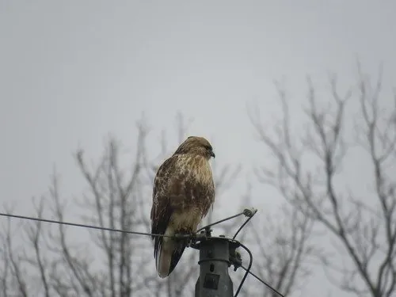

鸟类 · 动物界
普通鵟 Buteo japonicus

东亚常见的褐色中型猛禽，翼宽尾短，盘旋时双翼呈浅“V”形。常停栖于田野电线杆或枯树，伺机捕食鼠类，是农田生态的重要天敌。
- 分类
- 门脊索动物门纲鸟纲目鹰形目科鹰科属鵟属
- 栖息环境
- 林缘、疏林、农田、草坡、河谷与村庄附近的开阔地带，冬季常进入平原农区。
- 地理分布
- 繁殖于中国东北、华北及俄罗斯远东、日本；越冬于中国南方、台湾及东南亚北部。
- 保护级别
- IUCN 红色名录列为无危（LC）；中国国家二级保护野生动物。
物种志
普通鵟体长约五十至五十九厘米，翼展一百二十二至一百三十七厘米，体重五百五十至一千一百克，雌鸟大于雄鸟。上体深褐色，羽缘色浅，形成斑驳外观；下体淡褐至乳白，胸部有粗著纵纹，腹部横斑明显。尾羽褐色具多条暗色横带，翼下可见腕部深色斑块。虹膜褐色，嘴黑而基部黄色，脚黄色。
它栖息于针阔混交林缘、疏林、农田、草坡与河谷，常单独活动，喜停栖在视野开阔的电线杆、枯树或土坎上，发现猎物后俯冲扑击。繁殖期在树上营巢，每窝产卵二至四枚，孵化约一个月。中国境内多为冬候鸟与旅鸟，秋季沿海岸与山脊南迁，越冬于华北至华南的田野和湿地边缘，迁徙时可见数十只成群盘旋形成“鹰柱”。
形态与习性
- 体长50–59 厘米
- 翼展122–137 厘米
- 体重550–1100 克
- 食性鼠类为主，兼食蜥蜴、蛙与昆虫
- 繁殖树上营巢，每窝 2–4 枚
- 保护级别国家二级；IUCN 无危
趣味知识
- 翱翔时双翼保持浅 V 形，与鹰类的平展翼姿不同。
- 羽色由淡褐到深褐变化很大，野外易与毛脚鵟混淆。
- 迁徙季可形成数十只一起盘旋上升的“鹰柱”。